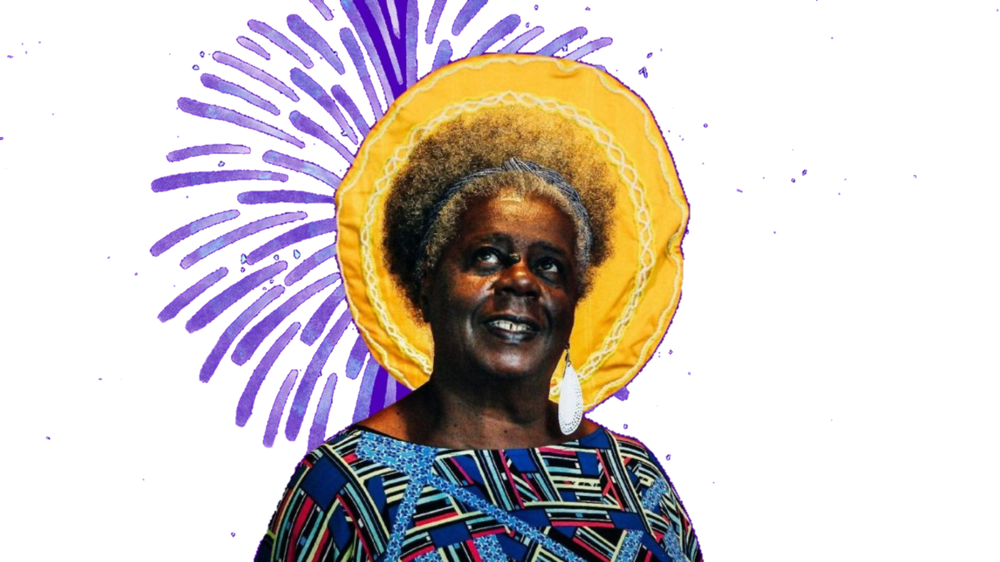

Conceição Evaristo
Conceição Evaristo é uma escritora, poetisa e ensaísta mineira conhecida pela forte representação das vivências e vozes das mulheres negras. Sua obra é marcada pelo conceito de "escrevivência", um estilo que mistura escrita com vivências pessoais e coletivas.
Fonte: google.com
Ponciá Vivêncio
Romance que conta a história de Ponciá, uma jovem que, ao deixar sua comunidade para buscar uma vida melhor, enfrenta as dificuldades da vida urbana e as marcas deixadas pela escravidão em sua família

Adquira em: amazon.com.br
Olhos d’Água
Coletânea de contos que aborda temas como racismo, pobreza e opressão, destacando a força das personagens negras que enfrentam uma realidade desafiadora com resistência e resiliência.

Adquira em: amazon.com.br